바이오화학제품제조기사 (2003-05-25 기출문제)
1과목: 미생물공학
1. 곰팡이를 이용하는 호기적 발효의 특징으로 적합한 것은?
- 배양액은 일반적으로 Newtonian fluid의 성질을 나타낸다.
- 낮은 교반속도에서 높은 산소전달속도(kLa)를 유지할수 있다.
- 균체의 응집으로 균체로의 영양분과 산소의 전달이 어려워진다.
- 균체의 형태가 타원형이므로 비교적 높은 교반속도에 서도 균체가 손상되지 않는다.
(정답률: 65%)

2. 인간 또는 동물의 조직으로부터 보통 얻어지는 물질이나 재조합 미생물로부터 생산할 수 있는 물질이 아닌 것은?
- Human growth hormone
- Insulin
- Interferon
- Lovastatin
(정답률: 73%)
3. Penicillium chrysogenum의 산소제한(oxygen-limited) 배양을 통하여 아래 표와 같은 실험결과를 얻었다. 이 균주의 산소에 대한 균체 수율(Yx/o)은 얼마인가?
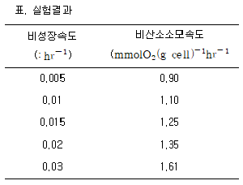
- 0.08 g cell/(mmol O2)
- 27.54 g cell/(mmol O2)
- 0.036 g cell/(mmol O2)
- 12.50 g cell/(mmol O2)
(정답률: 54%)
4. Pseudomonas putida를 포도당이 함유된 배지에서 배양하고, 각 포도당 농도에 대해서 다음 표와 같은 비성장속도를 얻었다. 비성장속도가 포도당 농도에 대해 Monod model을 따른다고 했을 때, 이 균주의 계산된 최대비성장속도(μmax)는 얼마인가?
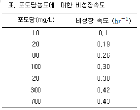
- 0.51
- 0.48
- 0.43
- 0.39
(정답률: 37%)
5. 다음 중에서 현재 시판되고 있는 재조합단백질 제품이 아닌 것은?
- 인슐린
- 간염백신
- 아스팔탐
- 사람성장 호르몬
(정답률: 70%)
6. Feed back inhibition에 의한 조절기구가 변화된 변이주를 분리하는 방법인 것은?
- Revertant mutant(복귀돌연변이주)의 획득
- Antibiotic resistant mutant의 획득
- Catabolite repression이 해제된 mutant의 획득
- Inducer가 필요하지 않은 constitutive mutant의 획득
(정답률: 59%)
7. 다음의 유기산중 TCA 경로를 경유하지 않고 생성되는 물질은?
- Citric acid
- Succinic acid
- Malic acid
- Acetic acid
(정답률: 75%)
8. 미생물의 증식과정에서 핵산함량이 가장 높은 시기는?
- 대수증식기
- 정지기
- 사멸기
- 유도기
(정답률: 82%)
9. 세균의 생장에 있어서 온도의 영향에 대한 다음 설명 중 옳은 것은?
- 세균의 최적 생장 온도는 최고온도보다 최저온도에 가깝다.
- 빙점 이하나 끓는 점 이상의 온도에서는 모든 세균의 생장이 억제된다.
- 저온성 세균은 중온성세균에 비하여 세포막의 포화지방산 농도가 낮다.
- 세균의 냉동보관시 사용하는 글리세롤은 열의 전달을 차단함으로써 세포의 동결을 막아준다.
(정답률: 57%)
10. nongrowth-associated 생성물을 효율적으로 생산하는 배양방법은?
- 회분배양
- 유가배양
- 연속배양
- 재순환 연속배양
(정답률: 72%)
11. 인슐린은 A와 B의 두 개의 폴리펩티드 사슬로 이루어져 있다. 이 인슐린의 유전자는 몇 개로 이루어져 있는가?
- 1
- 2
- 3
- 4
(정답률: 50%)
12. 계대배양시 지켜야할 규칙으로 맞는 것은?
- 접종에 필요한 needle 이나 loop는 끝부분만 살짝 불로 살균해야 한다.
- 유리튜브의 끝은 버너위에서 최소한 10초 이상 달구어야 한다.
- 뚜껑은 열기전 혹은 닫은후 튜브의 끝은 살짝 불로 살균해야 한다.
- 접종할 미생물을 취할 때 needle 이나 loop는 불에 달구어진 상태라야 한다.
(정답률: 79%)
13. Clarke와 Carbon은 다음식을 개발하였다. N=ln(1-P)/ln(1-f), [단, N = 재조합 형질 전환주(recombinant transformant)의 수, P = 재조합주에 원하는 유전자가 들어갈 확률 f = 제한절편(restriction fragment)의 크기 대 총 게놈 크기의 비, 인간 β-hemoglobin의 유전자의 크기는 1.5 kb이고, 인간 반수체(haploid) 게놈은 3x106 kb이다.] 재조합 형질전환주에서 99%의 확률로 최소한 하나 이상의 β-hemoglobin 유전자가 나타나려면 몇 개의 서로 다른 1.5 kb 짜리 제한절편을 clone해야 하는가?
- 4.4x106
- 9.2x106
- 1.⑤x107
- 2.23x107
(정답률: 70%)
14. 표면발효(surface culture)가 이용되어 얻을 수 있는 발효생산물은?
- Ethanol
- Citric acid
- Nucleic acid
- Glutamic acid
(정답률: 54%)
15. Corynebacterium glutamicum 야생균주에 자외선조사 또는 nitrosoguanidine 등의 변이유기제(mutagen)를 처리하여 얻은 homoserine kinase 활성결손주로 L-lysine을 생산하는 발효형식은?
- 유전자 조작으로 육종한 균주를 이용한 발효형식
- 영양요구성 변이주(autotroph)에 의한 발효형식
- Analog내성 변이주에 의한 발효형식
- 전구체(precursor) 첨가에 의한 발효형식
(정답률: 59%)
16. 산업용 알코올 발효균주의 특성으로서 바람직 하지 않은 것은?
- 고온성
- 호기성
- 알코올 내성
- 광범위한 기질 이용성
(정답률: 50%)
17. 요구르트 제조에 이용하는 미생물은?
- 대장균
- 젖산균
- 방선균
- 비피더스(Bifidus)균
(정답률: 79%)
18. 고체배지에서 잘 자라지 못하는 미생물의 cell concentration을 측정하는 방법은?
- viable cell counting method
- spectrophotometric measuring method
- most probable number method
- dry cell weight method
(정답률: 47%)
19. 다음 효소 중 미생물로부터 생산되는 세린(serine)계 단백질 분해효소가 아닌 것은?
- 섭틸리신 (subtilisin)
- 트립신 (trypsin)
- 키모트립신 (chymotrypsin)
- 파파인 (papain)
(정답률: 54%)
20. 옥수수 전분으로부터 과당(fructose) 제조시에 이용되지 않는 효소는?
- 알파 아밀라제(α -amylase)
- 글루코 아밀라제(glucoamylase)
- 글루코스 이소머라제(glucose isomerase)
- 셀룰라제(cellulase)
(정답률: 72%)
2과목: 배양공학
21. 혐기성 발효에 있어서 ATP 수율(YX/ATP)은 약10.5g 건조세포/g 포도당이다. 아래에 표시된 효모에 의한 에탄올 발효에 있어서 이론적 성장수율 (Yx/s)은?
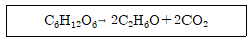
- 0.⑤9
- 0.117
- 0.234
- 0.351
(정답률: 59%)
22. 대사열의 발생량과 가장 관계가 깊은 것은?
- 탄소원의 소비량
- 산소의 소비속도
- 질소원의 소비속도
- 알칼리의 소비속도
(정답률: 50%)
23. 연속배양의 특성을 설명한 것 중 잘못된 것은?
- 균체의 농도는 초기에 공급되는 배지의 성분 중 제한 기질의 농도에 비례하여 증가한다.
- 균체의 농도는 희석율(dilution rate)의 증가에 따라 점차적으로 증가하는 경향을 보인다.
- 희석율(dilution rate)은 균체의 최대 비성장 속도까지 증가 시킬수 있다.
- 배양액중 제한기질의 농도는 희석율(dilution rate)가 낮은 영역에서는 매우 낮게 유지된다.
(정답률: 65%)
24. 연속식 배양조건과 관련이 없 는 것은?
- 균주선택을 위한 도구로 사용될 수 있다.
- 세포의 성장속도를 희석속도로 조절할 수 있다.
- 균체수율(Yx/s)을 최대로 증가시켜 운전할 수 있다.
- 정상상태에 도달한 후에는 세포, 산물, 기질의 농도가 일정하게 유지된다.
(정답률: 37%)
25. 미생물의 호기성 배양시 대부분의 경우에 용존산소농도가 제한되어 세포증식이 억제된다. 이를 해결하기 위한 방법이 아 닌 것은?
- 방해판 (baffle)이 설치된 진탕 플라스크를 사용하여 표면통기 (surface aeration)을 증가시킨다.
- 미생물의 펠렛 (pellet)화를 막기 위해 분산제를 첨가하여 점도를 올린다.
- 교반식 발효조에서 스파저 (sparger)를 사용하여 공기를 주입한다.
- 공기방울을 작게 분산시키기 위해 교반속도를 증가시킨다.
(정답률: 65%)
26. 목적 단백질을 만드는 능력을 잃어버린 세포들의 유전자 불안정성의 원인이 아 닌 것은?
- 분리에 의한 유실(segregational loss)
- 구조적 불안정성
- 단백질의 세포밖으로의 배출여부
- 숙주세포조절기능의 돌연변이
(정답률: 80%)
27. 당밀을 이용하여 글루탐산을 발효할 때 biotin의 함량이 높아서 균체의 과다한 성장으로 글루탐산의 수율이 떨어진다. 그러므로 이 때 세포성장을 둔화시켜 글루탐산의 최적생산을 위해 사용되는 것은?
- 비타민 C
- 비타민 B12
- penicillin G
- α -ketoglutarate
(정답률: 60%)
28. 절대호기성 미생물 (strict aerobe)에서 산소는 중요한 영양원이다. 대기 중 (1기압, 1 atm)의 산소가 상온 (25℃)에서 액체배지에 포화되었을 때의 배지중의 용존산소 농도는?
- 약 5 ppm
- 약 7 ppm
- 약 12 ppm
- 약 20 ppm
(정답률: 50%)
29. 다음에서 배양액내의 균체 농도를 직접 정량할 수 있는 방법이 아 닌 것은?
- 배양액의 건조 중량 측정
- 배양액 단위부피당 총 균수 측정
- 배양액 침전후 부피 측정
- 배양액 단위부피당 발열양 측정
(정답률: 74%)
30. 유전자 조작 세포를 이용하여 산업적인 생산을 할 경우에 문제가 되는 유전자 불안정성의 원인이 아 닌 것은?
- 분리에 의한 유실(segregational loss)
- 구조적 불안정성(structural instability)
- 선별적인 생장조건(selective growth condition)
- 숙주세포 조절기능의 돌연변이(host cell regulatory mutation)
(정답률: 63%)
31. 배양 동물세포의 특성이 아 닌 것은?
- 세포벽이 없이 원형질막으로만 되어 있다.
- 모든 동물 세포는 벽에 붙어서 증식한다.
- 세포의 영양요구성이 완전히 밝혀져 있지 않아서 복합성분인 혈청이 첨가되기도 한다.
- 배지의 삼투압이 세포의 활성에 영향을 준다.
(정답률: 59%)
32. 회분식 배양의 지수 성장기에서 세포의 배가시간 (doubling time)을 측정하니 30 분이었다. 그 때의 비성장속도(specific growth rate)는?
- 0.17 g/(min L)
- 2.89 hr-1
- 43.29 g/min
- 0.023 min-1
(정답률: 65%)
33. 무혈청 배지 이용의 장점이 아 닌 것은?
- 배지가격을 줄임
- 결과 및 생산의 재현성 증대
- 생산물의 분리정제 공정의 용이
- 단백질 제재 산물의 생산성 증대
(정답률: 50%)
34. 산업적인 발효에 사용되는 탄소원이 아 닌 것은?
- 전분(starch)
- 당밀(molasses)
- 대두분(soy meal)
- 옥수수 시럽(corn syrup)
(정답률: 67%)
35. 미생물의 필수적인 영양요소와 거리가 먼 것은?
- 탄소원
- 질소원
- 인
- 티타늄
(정답률: 75%)
36. impeller type중 같은 회전 속도에서 air flooding이 적고 충분한 교반 효과를 기대할 수 있는 것은?
- Vaned disk type
- Flat blade turbine type
- Open turbine type
- Propeller type
(정답률: 50%)
37. 생물반응기의 대규모화(scale-up)에는 많은 문제점이 발생한다. 따라서 대규모화 추진에는 올바른 개념과 방안이 필요하다. 올바른 대규모화 추진 전략은?
- 생물반응기 대규모화에선 산소전달, 교반효율, 전단응력 발생과 같은 모든 배양 조건들을 소규모 배양과 같게 유지하도록 한다.
- 생물반응기 대규모화에선 반응기 설계의 문제점을 극복하기 위해 산술적 규모의 비율을 적용하는 설계기법을 도입한다.
- 생물반응기 대규모화에선 배양 환경 및 조건이 열악해지기 때문에 중요한 핵심 배양조건을 우선적으로 소규모 배양 때와 같게 유지하도록 한다.
- 생물반응기 대규모화에선 대형반응기의 물리적 조건을 소규모 배양기의 조건과 같게하기 위하여 기하학적 유사성(geometrical similitude)을 유지한다.
(정답률: 29%)
38. 산소전달속도(OTR)의 설명으로 옳은 것은?
- 배양기에서 산소를 소비하는 속도이다.
- 비산소소비속도라고도 하며 mgO2/g-hr의 단위를 가진다.
- 정상적인 발효를 하기 위해서는 OTR<OUR의 조건이 되어야 한다.
- No2라고도 하며, 그 식은 NO2 = KLa(C*-Co)로 나타내며 기체상의 산소가 액체로 전달되는 속도이다.
(정답률: 50%)
39. 배지로 사용되는 성분 중에서 질소원으로 합당하지 않은 것은?
- 암모니아 가스
- 대두밀 (soy meal)
- 옥수수 침지액 (Corn steep liquor)
- 당밀
(정답률: 72%)
40. 미생물을 고농도로 배양하기 위한 방법이 아닌 것은?
- Fed-batch culture
- Recycle reactor culture
- Immobilized culture
- Continuous culture
(정답률: 54%)
3과목: 생물반응공학
41. 다음 효소 중 고정화하기에 적합하지 않 은 효소는?
- Cellulase
- Protease
- Isomerase
- Lipase
(정답률: 39%)
42. Briggs-Haldane식으로 나타낼 수 있는 효소반응에서 아래의 물질 중 반응시간에 따라서 농도의 변화가 가장 적은 물질은?
- 효소활성 저해물질
- 반응물질
- 생성물질
- 효소와 반응물질의 복합체
(정답률: 58%)
43. 공기 유입이 없는 생물반응기의 배양액 교반에너지(P)는 배양액의 밀도(ρ)와 점도(μ), 교반기의 회전속도(N), 교반기 날개의 직경(Di)의 값에 의존한다. 이들 관계에 대한 실험결과는 두 무차원 변수 Power Number와 Reynold Number를 이용해서 나타내져서 배양액의 교반에너지를 예측하기 위해서 사용된다. Power Number 식은?
- P/ρN2Di3
- ρNDi2/μ
- P2/(ρN3Di5)
- P/(ρN3Di5)
(정답률: 39%)
44. 다음 중 효소의 안정도를 증가시키는 방법은?
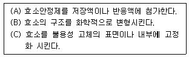
- C
- B, C
- A, B, C
- A, C
(정답률: 39%)
45. 세포성장을 모사하는데 가장 널리 쓰이는 것 중의 하나인 Monod 식에 대한 설명으로 틀 린 것은?
- 기질농도가 매우 높을 때 세포의 비성장속도는 기질 농도에 관계없이 일정하다.
- 기질농도가 매우 낮을 때 비성장속도는 기질농도에 정비례 한다.
- 포화상수(saturation constant)가 클수록 기질에 대한 친화도가 높다.
- 포화상수는 최대 비성장속도 값의 1/2 에 해당하는 비성장속도를 나타내는 기질농도로 정의된다.
(정답률: 50%)
46. 다음은 미생물의 생성과 분해에 소요되는 산소, 암모니아량을 표시하고 있다. 각각 얼마인지 계산하면?
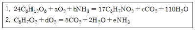
- a=30, b=17, c=30, d=5, e=1
- a=45, b=10, c=15, d=6, e=0.5
- a=55, b=15, c=50, d=8, e=1
- a=59, b=17, c=59, d=5, e=1
(정답률: 72%)
47. 일반적으로 미생물의 세포농도는 spectrophotometer(분광계)를 이용하여 손쉽게 측정할 수 있다. 다음 설명 중 올바르지 않 은 것은?
- 시료실을 통과하는 빛은 세포밀도와 시료실 두께의 함수이다.
- 배지에는 기본적으로 입자가 없어야 한다.
- 광학밀도(optical density)와 미생물의 건조중량을 연결하는 보정곡선이 필요하다.
- 배지에 의한 빛의 흡수를 최소화하기 위해 일반적으로 자외선 구간의 파장이 사용된다.
(정답률: 50%)
48. 생물학적 막에 세포가 고정화되는 경우 생물막이 천천히 성장함에 따라 Thiele 계수는 어떻게 변하는가? 만일 전단응력에 의하여 생물막의 일부가 떨어져 나가면 Thiele 계수에 어떤 변화가 일어나는가?
- 점차적으로 감소, 갑자기 증가
- 점차적으로 증가, 갑자기 감소
- 점차적으로 증가, 변화 없음
- 변화 없음, 갑자기 감소
(정답률: 65%)
49. 다음 중 정제 공정에 포함이 되지 않는 생물분리공정은?
- 크로마토그래피
- 전기영동
- 한외여과
- 추출
(정답률: 50%)
50. 회분식 효소반응기에서 반응속도가
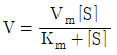
로 주어졌을 때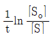
를 x축으로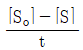
를 y축으로 도식화하면 직선을 얻을 수 있다. 이 직선의 기울기와 y축 절편은?- 기울기:-Km, 절편: 1/Vm
- 기울기:
 , 절편:Vm
, 절편:Vm - 기울기:Km, 절편:1/Vm
- 기울기:1/Km, 절편:Vm
(정답률: 50%)
51. 사상균 배양의 경우 일반적으로 배양액의 점도가 매우 높아져 산소공급에 문제가 발생한다. 이런 문제를 최소화 하기에 가장 적합한 반응기 형태는?
- 교반형(stirred vessel type)
- 유동층(fluidized-bed type)
- 기포탑(bubble coumn type)
- 공기부양식(air-lift type)
(정답률: 47%)
52. 고정화 세포계에서의 생물반응기에 관한 내용이다. 맞는 것은?
- 대부분의 경우 고정화 세포관을 통해 영양액을 통과시키는 관류(perfusion)방식으로 운전된다.
- 고정화 동물세포 배양기는 유동층(fluidized-bed) 형태로 운전되는데 아주 낮은 재순환을 필요로 한다.
- 고정화 세포를 이용한 폐기물처리 시스템에서는 아주 낮은 재순환이 필수적인데, 이때 계는 연속식 반응기에 가깝다.
- 일반적으로 지지담체는 기계적으로 강하기 때문에 충전관(packed-column) 반응기같이 높은 수력학적 전단응력을 가지는 반응기가 선호된다.
(정답률: 62%)
53. 다음 중 틀 린 설명은?
- 정지기 동안, 세포는 세포 내의 저장물질을 분해하여 새로운 구성단위 물질을 만든다.
- 사멸기는 정지기 다음이다.
- 사멸속도의 일차 반응식은
 (N은 세포농도임.) 이다.
(N은 세포농도임.) 이다. - 지수생장기에는 세포의 질량과 수가 지수적으로 늘어난다.
(정답률: 50%)
54. 다음의 세포 성장 주기 중 순수세포성장속도 (net growth rate)가 0 이며 주로 이차대사물이 생성되는 시기는?
- 지연기 (lag phase)
- 지수 생장기 (exponential phase)
- 감속기 (decelerating growth phase)
- 정지기 (stationary phase)
(정답률: 75%)
55. 초기 액상부피가 1ℓ 인 생물반응기에 고농도의 포도당을 시간당 0.5ℓ 로 주입하는 유가식 배양을 통해 2 시간 후 에 50g의 세포를 얻었다. 이 때, 반응기에서의 세포의 농도는?
- 100 g/ℓ
- 50 g/ℓ
- 25 g/ℓ
- 10 g/ℓ
(정답률: 70%)
56. 효소반응과 유기반응을 구별하는 가장 큰 차이점은?
- 유기반응은 고온, 고압에서 효소반응은 상온, 상압에 서 주로 이루어진다.
- 유기반응은 물 혹은 유기용매상에서 효소반응은 주로 물에서 이루어진다.
- 유기반응은 기질에 대한 특이성이 적고 효소반응은 크다.
- 유기반응은 부산물이 많은데 효소반응은 적다.
(정답률: 39%)
57. 생물반응기를 대규모화 할 때 반응기의 크기변화에 따라서 일정한 값을 유지하고자 하는 항목이 아 닌 것은?
- 배양액의 단위부피 당 교반에너지
- 배양액의 단위부피 당 산소전달계수
- 교반날개의 선단속도
- 공기유입속도
(정답률: 59%)
58. 교반식 연속생물반응기의 특성에 대해서 틀 린 것은?
- 시간에 따라 반응조건이 일정하게 유지된다.
- 정상상태에서 반응이 이루어질 수 있다.
- 2차 대사산물의 생산에 적합하다.
- 회분식 반응기에 비해서 생산속도가 증가한다.
(정답률: 67%)
59. 셀룰로즈 아세테이트로 만들어진 막여과기에 대해서 틀 린 설명은?
- 기체와 액체의 여과에 사용할 수 있다.
- 사용 후 고압증기로 멸균할 수 있다.
- 여과 중 압력손실이 작다.
- 고농도 미생물의 여과에 사용할 수 있다.
(정답률: 47%)
60. 단백질 효소들은 효소활성을 위하여 비단백질기를 필요로 한다. 비단백질을 갖는 효소를 뜻하는 것은?
- 보조효소(coenzyme)
- 완전효소(holoenzyme)
- 순효소(apoenzyme)
- 유사효소(isozyme)
(정답률: 47%)
4과목: 생물분리공학
61. 단백질을 구성하는 아미노산은 무슨 결합에 의해 서로 연결되는가?
- 에스테르결합(ester bond)
- 수소결합(hydrogen bond)
- 펩티드결합(peptide bond)
- 소수성결합(hydrophobic interaction)
(정답률: 70%)
62. 다음 한외 여과막 중 부피에 대해 표면적이 가장 큰 막형태는?
- 실관형
- 평판형
- 나선감김형
- 관형
(정답률: 34%)
63. 막 여과시 발생하는 농도분극현상을 줄이기 위한 방법이 아닌 것은?
- 맥동 (Pulsation)
- 진동 (Vibration)
- 교차류 (Cross-flow)
- 향류 (Counter-current flow)
(정답률: 42%)
64. 동시생물반응과 회수기술에 속하지 않 는 것은?
- 진공 발효법
- 젤(gel)여과 크로마토그래피법
- 고체흡착제 첨가법
- 액체추출제 첨가법
(정답률: 62%)
65. 단백질의 베타-턴(β -turn) 구조를 구성하는 최소 아미노산 개수와 분자결합 형태는?
- 4개/수소결합
- 5개/공유결합
- 6개/이온결합
- 8개/소수성결합
(정답률: 50%)
66. 항생물질, 혈청 등 액체에 용해되어 있는 상태로서 특히 열에 불안정한 물질에 대해 사용하는 건조법은?
- 적외선 복사건조법
- 동결건조법
- 고주파건조법
- 유동층건조법
(정답률: 73%)
67. 생물반응과 분리의 동시공정의 장점에 속하지 않는 것은?
- 기질저해의 제거
- 생성물 저해의 감소
- 반응수율의 증가
- 생성물의 변성 방지
(정답률: 47%)
68. 추출공정에서 분배계수 K > 1인 조건은? (단, L은 가벼운 용매이고 H는 무거운 용매이며 μ°는 표준상태의 화학포텐셜이다.)
- μ°H) > μ°(L)
- μ°(H) = μ°(L)
- μ°(H) < μ°(L)
- μ°(H) = ∞
(정답률: 50%)
69. 전류를 가하여 용액으로부터 전하를 띄는 분자를 분리하는데 사용되는 막분리 방법은?
- 전기영동
- 전기투석
- 투석
- 크로마토그래피
(정답률: 50%)
70. 정압(진공)여과운전에서 여과속도는 여과기의 표면적과 여액의 점도와 각각 어떤 관계인가?
- 여과기의 표면적에 비례, 여액의 점도에 비례
- 여과기의 표면적에 비례, 여액의 점도에 반비례
- 여과기의 표면적에 반비례, 여액의 점도에 비례
- 여과기의 표면적에 반비례, 여액의 점도에 반비례
(정답률: 70%)
71. 발효 생산물이 아 닌 것은?
- 세포
- 세포외 생산물
- 세포내 생산물
- 요소
(정답률: 54%)
72. 재조합 효모에 의해 분비생산된 분자량 50000 Da의 효소를 막분리 공정을 사용하여 농축하려고 한다. 다음 보기 중에서 순서적으로 가장 적절한 공정은?
- 미세여과 - 한외여과
- 한외여과 - 미세여과
- 한외여과 - 역삼투
- 역삼투 - 한외여과
(정답률: 50%)
73. 승화현상을 이용한 건조기는?
- tray dryer
- spray dryer
- freeze dryer
- tumble dryer
(정답률: 71%)
74. 여과공정에서 여과속도를 높이기 위한 방법이 아닌 것은?
- 점도를 낮춘다.
- 여과면적을 높인다.
- 압력을 증가시킨다.
- 온도를 낮춘다.
(정답률: 67%)
75. 대장균의 세포벽을 분해하는데 사용되는 라이소자임(lysozyme)의 효율성을 높이기 위해 전처리에 사용되는 물질은?
- 우레아(urea)
- 에탄올
- EDTA
- 글루타치온
(정답률: 64%)
76. 다음 여러 가지의 원심 분리기 중에서 시간당 처리량이 가장 큰 것은?
- 경사분리기
- 노즐분리기
- 고형물 보울분리기
- 고형물 분출분리기
(정답률: 31%)
77. 발효액으로부터 효소를 분리하고 정제하는데 수반되는 주요 단계 중 맨 처음에 수행하여야 할 단계는?
- 세포, 불용성 입자 및 거대분자 같은 고체의 분리
- 생성물의 1차분리 또는 농축과 대부분의 수분 제거
- 오염화학물질의 정제 또는 제거
- 건조와 같은 생성물의 제조
(정답률: 79%)
78. 2M의 KCl 2L를 4M의 NaNO3 1L에 섞었을 때 몇 mol만큼의 KNO3가 침전될 것인가? (단, KCl의 용해도적(solubility product)은 10(mol/liter)2이고 KNO3는 1.7(mol/liter)2이며 NaNO3는 100 (mol/liter)2이다.)
- 0.09
- 0.9
- 1.5
- 1.9
(정답률: 42%)
79. 다음 실험장비 중 추출실험장치는?
- 피펫
- 분액깔대기
- 리비히응축기
- 엘렌마이어 플라스크
(정답률: 43%)
80. 다음 중 분리에 영향을 미치는 주요인자가 물질의 크기(size)가 아 닌 것은?
- 한외여과
- 젤 크로마토그래피
- 역삼투
- 추출
(정답률: 45%)
5과목: 생물공학개론
81. 다음 중 KGMP 4대 기준서 가운데 품질관리기준서에 포함될 사항이 아닌 것은?
- 품명, 시험항목, 판정결과 등이 기재된 시험기록작성
- 검체의 채취량· 채취장소 및 채취방법
- 시험결과를 감독기관에 보고하는 방법
- 시험시설 및 기구의 점검
(정답률: 78%)
82. 전통적 의미의 발효(fermentation)에 대해 잘 못 기술한 것은?
- 전자전달계가 없이 이루어 진다.
- 무산소 상태의 대사과정(anaerobic metabolism)이다.
- 무산소 호흡(anaerobic respiration)을 통해 이루어 진다.
- 유산(lactic acid) 등 유기산의 생성이 pyruvate를 거친 단계적 반응으로 이루어 진다.
(정답률: 39%)
83. 다음 중 해독(translation)과정에 필요한 요소가 아닌 것은?
- tRNA
- 리보솜
- ATP와 같은 화학에너지원
- RNA 중합효소
(정답률: 72%)
84. 고정화 세포 시스템에서 Damkoehler 수는 (최대 생변환속도)/(최대 확산속도)로 정의된다. Damkoehler 수가 1보다 훨씬 큰 경우가 의미하는 것은?
- 생산성이 매우 높다.
- 확산이 속도 결정단계이다.
- 반응속도가 속도 결정단계이다.
- bulk 용액이 turbulent flow이다.
(정답률: 62%)
85. 세포내에서 단백질 합성이 일어나는 곳은?
- mitochondria
- plasma membrane
- ribosome
- golgi body
(정답률: 69%)
86. KGMP에 의해 제조관리부서 책임자가 관리해야 할 사항이 아 닌 것은?
- 제품 시험 분석에 관한 시험지시서 작성 및 점검· 확인
- 제품표준서, 제조관리기준서 및 제조위생관리기준서 비치, 운영
- 제조지시서 작성 및 작업 진행 점검, 확인
- 원료자재 및 완제품의 보관관리 담당자 지정
(정답률: 40%)
87. 지수성장기에 있는 회분식 발효공정으로부터 다음 데이터를 얻었다. 이 때 비성장속도는 얼마인가?
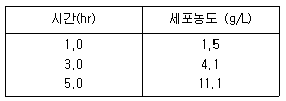
- 1.9 hr-1
- 1.3 hr-1
- 0.9 hr-1
- 0.5 hr-1
(정답률: 65%)
88. 람버트-비어(Lambet-Beer)의 법칙이 성립하기 위한 조건이 아닌 것은?
- 입사광은 단색광이어야 한다.
- 용액 및 용매분자에 의한 산란이 없어야 한다.
- 용액 계면에서의 반사, 기기 내부의 미광이 없어야한다.
- 용액 농도가 변화함에 따라 용질 화학종의 용존 상태가 변화해야 한다.
(정답률: 65%)
89. 다음 중 고박테리아(archaebacteria)와 진정세균(eubacteria)의 차이점이 아 닌 것은?
- 단백질 생합성 과정
- 세포막의 지질 조성
- 리보슴 RNA의 염기서열
- 세포벽의 구성 성분
(정답률: 40%)
90. 간 세포 내부의 pH는 6.9이다. [H]+의 농도는?
- 0.84 × 10-6
- 0.84 × 10-7
- 1.26 × 10-6
- 1.26 × 10-7
(정답률: 50%)
91. 다음 중 방선균(Actinomycetes)의 특성과 관련이 없는 것은?
- 균사생장
- 토양미생물
- 사상균류
- 산업미생물
(정답률: 46%)
92. 단백질은 아미노산 곁가지에 많은 수의 약산성 그룹과 약염기성 그룹을 가지고 있다. 이들 그룹이 하는 역할이 아닌 것은?
- 다른 분자와 이온결합하는 역할
- 전기적 중성을 유지하는 역할
- pH 변화에 대한 완충작용 역할
- 다른 분자와 소수성 결합하는 역할
(정답률: 42%)
93. 재조합 (cloning)된 미생물은 성장과정에서 플라스미드(plasmid)를 손실할 가능성을 갖고 있다. 발효과정에서 플라스미드를 가진 (plasmid-carrying) 미생물 (X+)과 플라스미드가 손실된 (plasmid-free) 미생물 (X-)의 시간에 따른 농도변화에 대한 물질수지식을 올바르게 나타낸 것은? (여기서, μ 는 미생물의 비증식속도 (specific growth rate), p 는 세포증식에서 플라스미드를 손실한 확률을 나타낸다 (p<1).)
- dX+/dt = (1-p) μ+X+ dX-/dt = p μ-X-
- dX+/dt = (1-p) μ+X+ dX-/dt = p μ+X+ + (1-p) μ-X-
- dX+/dt = (1-p) μ+X+ dX-/dt = p μ+X+ + μ-X-
- dX+/dt = p μ+X+ dX-/dt = (1-p) μ-X-
(정답률: 32%)
94. 다음 중 TCA cycle의 주요 기능은?
- 전자방출
- ATP 합성
- NADH 합성
- 전자이동
(정답률: 17%)
95. 성장이 Monod kinetics를 따르는 미생물의 연속 발효공정을 생각하자. 공정이 정상상태에 있을 때 공급되는 feed중의 기질 농도를 두배로 하면 새로운 정상상태에 도달했을 때, 발효조 중의 기질농도는? (단, 기질로부터 세포이외의 물질은 생성되지 않고, 유지(maintenance)를 위한 기질의 소모도 없으며, 세포의 사멸도 없는 것으로 가정한다.)
- feed중의 기질농도를 바꾸기 전의 값과 같다.
- feed중의 기질농도를 바꾸기 전의 값의 2배가 된다.
- feed중의 기질농도를 바꾸기 전의 값보다 높지만 2배가 되지는 않는다.
- feed중의 기질농도를 바꾸기 전의 값보다 낮아진다.
(정답률: 58%)
96. 다음 보기의 크로마토그래피중 이동상이 액체인 것은?
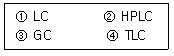
- ①
- ①, ②
- ①, ②, ④
- ①, ②, ③, ④
(정답률: 0%)
97. 다음 중 그람양성세균에만 존재하는 세포벽 구성 성분은?
- 펩티도글리칸 (peptidoglycan)
- 테이코익산 (teichoic acid)
- 지질다당류 (lipopoly saccharide)
- 인지질 (phospholipid)
(정답률: 40%)
98. RNA를 구성하는 염기가 아닌 것은?
- 아데닌
- 시토신
- 티민
- 구아닌
(정답률: 60%)
99. 포도당에 의해 성장이 기질저해를 받는 박테리아가 있다. 이러한 박테리아의 포도당을 원료로 하는 연속배양 시 이론적으로 가능한 정상상태는 몇 개인가? (단, 원료 중 기질농도는 충분히 높다고 가정, 세출(wash-out) 상태는 고려하지 않음, 유지(maintenance)를 위한 기질소비 무시, 세포사멸 무시, 세포이외의 산물은 없음. 기질저해시의 비성장 속도식은 다음과 같다.)
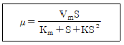
- 1 개
- 2 개
- 3 개
- 4 개
(정답률: 56%)
100. 다음 중 박테리아가 한 세포에서 다른 세포로 유전자를 전달하는 방법이 아닌 것은?
- 형질전환(Transformation)
- 전사(Transcription)
- 형질도입(Transduction)
- 접합(Conjugation)
(정답률: 72%)